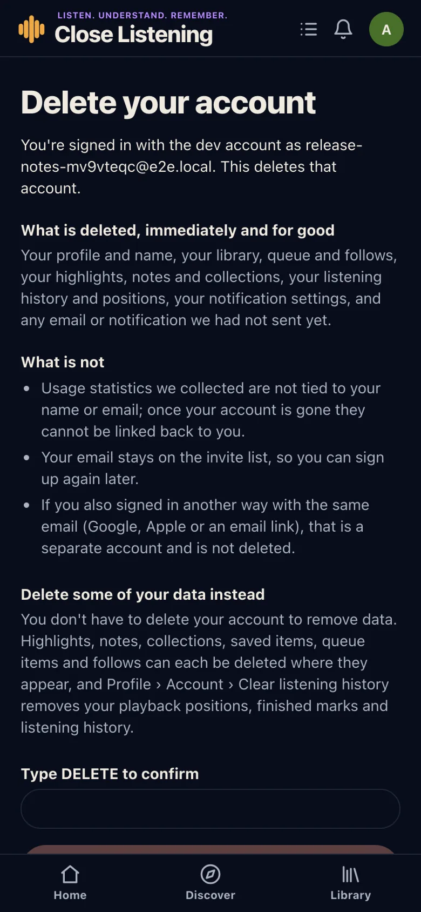
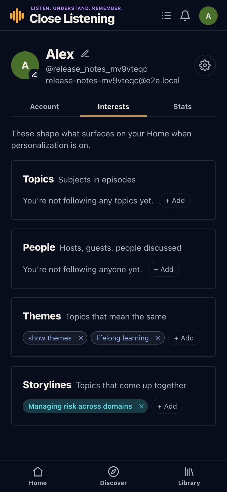
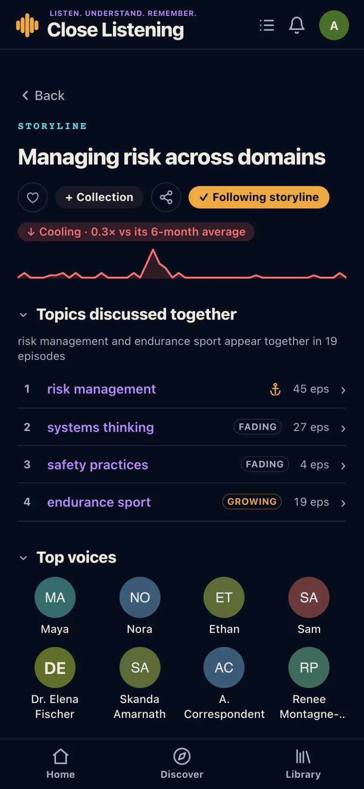

Save, boards, share
- The heart reads Save; "Add to collection" is Add to board.
- Share cards are pictures made for you, with new cards for themes and highlighted quotes.
- "Share link" and "Share text" are Copy link and Copy text.
Release 1.0.1 · Beta
1.0.1 added the account and privacy controls a store app needs, a proper Interests tab, a colour for each kind of subject, and plainer words for saving, sharing and playing.
Profile › Account
Delete account explains what goes and what stays, and only runs once you type DELETE. Clear listening history removes positions, played marks and listening time, and keeps your library.

Profile › Interests
The Topics tab became Interests, with one section each for topics, people, themes and storylines. + Add searches everything of that kind, with suggestions, and changes save at once.


Also in 1.0.1
Changed or moved
Something not working as described? See the known issues.